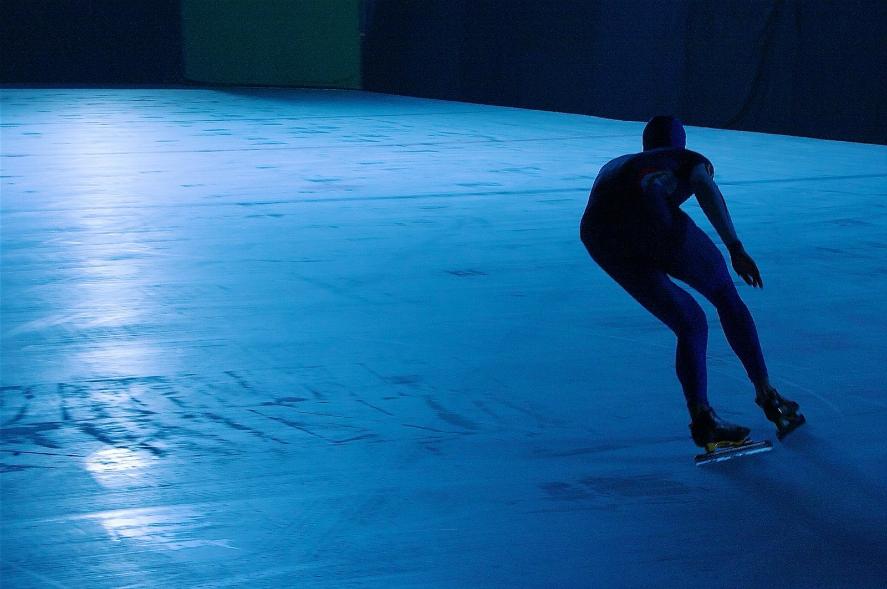
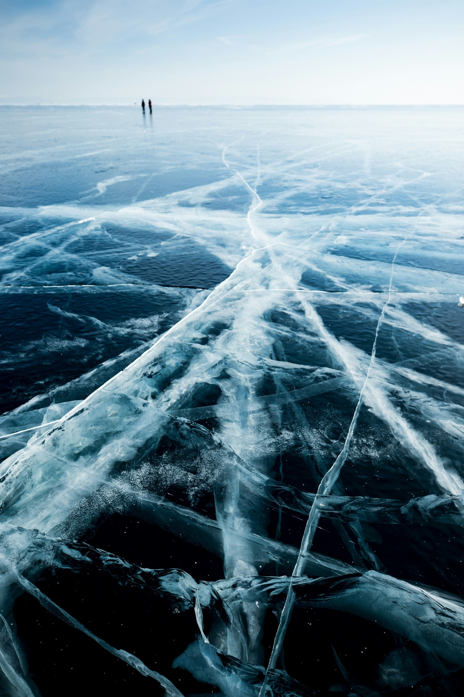

Verhalen van het ijs
Verslagen, beelden en tips van onderweg — over schaatsen op natuurijs, reizen en onderhoud.
Verhalen van onderweg: hoe een tocht op natuurijs verloopt, wat er allemaal bij komt kijken en praktische tips over schaatsen, kleding en materiaalonderhoud.
Liever nu al iets vragen of horen hoe een reis eruitziet? Neem gerust contact op.
Naar contact
Kledingadvies voor schaatsen op natuurijs
Wat trek je aan bij kou, wind en lange dagen op het ijs? Kledingadvies per temperatuur, voor sportieve tochten en rustige dagen met veel pauzes.

Hoe stel je je schaatsen goed af?
Praktisch advies over het afstellen van je schaatsen: ijzerpositie, ronding, bending en slijpen, voor meer balans en comfort op het ijs.

Schaatstechniek op het rechte stuk
Tips voor een stabiele, efficiënte schaatstechniek op het rechte stuk: houding, afzet, glijden en ritme tijdens lange natuurijstochten.

Overstappen bij het schaatsen: pootje-over
Zo leer je pootje-over: overstappen in de bocht bij het schaatsen, met tips over houding, gewichtsverplaatsing en balans.
Eerste schaatsreis naar Scandinavië: voorbereiding
Ben je goed voorbereid op je eerste schaatsreis? Een opbouw per weken vooraf, met wat je technisch minimaal comfortabel moet kunnen.

Hoe is het om in Zweden op natuurijs te schaatsen?
Hoe een schaatsdag in Zweden eruitziet, wat natuurijs anders maakt dan een ijsbaan, welk materiaal je nodig hebt en voor wie een schaatsreis naar Zweden geschikt is.

Schaatsreis naar Orsa: voor wie past deze Zweedse schaatsbestemming?
Een schaatsreis naar Orsa in Dalarna combineert natuurijs met rust en winterlandschap. Ontdek voor wie deze Zweedse schaatsbestemming geschikt is.

Schaatsreis naar Falun: natuurijs combineren met een verblijf in Dalarna
Een schaatsreis naar Falun combineert natuurijs op meer Runn met een verblijf dicht bij een grotere plaats in Dalarna. Voor wie past deze bestemming?

Orsa versus Falun: welke schaatsbestemming past beter bij jou?
Orsa en Falun liggen beide in Dalarna, maar verschillen in sfeer en voorzieningen. Ontdek welke schaatsbestemming het beste bij jouw reis past.

Schaatsreis naar Luleå: bijzondere ijsbaan, maar past deze bestemming bij jou?
Een schaatsreis naar Luleå combineert natuurijs met een grote ijsbaan vlak bij de stad en de Grand Prix-wedstrijden. Hoe verhoudt dat zich tot Orsa en Falun?

Schaatsreis naar de Weissensee: veel meer dan alleen de Alternatieve Elfstedentocht
De Weissensee is bekend van de Alternatieve Elfstedentocht, maar een schaatsreis naar dit meer biedt ook daarbuiten echt natuurijs.

Wat is de beste periode om in Scandinavië te schaatsen?
Wanneer is het beste moment voor een schaatsreis naar Zweden of Finland? Praktische uitleg over natuurijs, weer en het juiste boekmoment.

Wat gebeurt er als het geplande ijs niet goed genoeg is?
Niet goed genoeg natuurijs op de geplande locatie? Lees welke alternatieven er zijn tijdens een schaatsreis in Zweden of Finland.

Zweden of Finland voor een schaatsreis? Een praktische vergelijking
Zweden of Finland voor je schaatsreis? Een praktische vergelijking op landschap, type schaatsdag, niveau, materiaal en kosten.

Schaatsreis naar Punkaharju, Finland: hoe ziet zo’n reis eruit?
Hoe ziet een schaatsreis naar Punkaharju in Finland eruit? Over het merenlandschap, een schaatsdag en voor wie deze bestemming past.

Langlaufschaatsen versus noren op natuurijs: 7 verschillen
Langlaufschaatsen of noren op natuurijs? Zeven praktische verschillen op een rij, van schoen en binding tot comfort, onderhoud en persoonlijke voorkeur.

Wat kost een schaatsreis naar Zweden of Finland?
Een schaatsreis bestaat uit verschillende kostenposten: vervoer, verblijf, materiaal en meer. Zo krijg je een eerlijk beeld van waar je voor betaalt.

Veiligheid op natuurijs: wat moet je weten vóór je in Scandinavië gaat schaatsen?
Schaatsen op niet-gecontroleerd natuurijs vraagt kennis, materiaal en goede beslissingen. Tien aandachtspunten voor een veilige schaatsreis in Scandinavië.

Paklijst schaatsreis Scandinavië: wat neem je echt mee?
Een praktische paklijst voor je schaatsreis naar Scandinavië: van schaatsen en kleding tot veiligheidsmateriaal en persoonlijke spullen.

Schaatsen meenemen in het vliegtuig: handbagage of ruimbagage?
Mogen schaatsen mee in je handbagage? Meestal niet. Praktisch advies over ruimbagage, ijzers beschermen, ijspriemen en bagageregels per maatschappij.
Zin om zelf op het ijs te staan?
De reizen zijn de kern van Novakse. Daarnaast kun je bij mij terecht voor training en voor het slijpen en afstellen van je schaatsen.